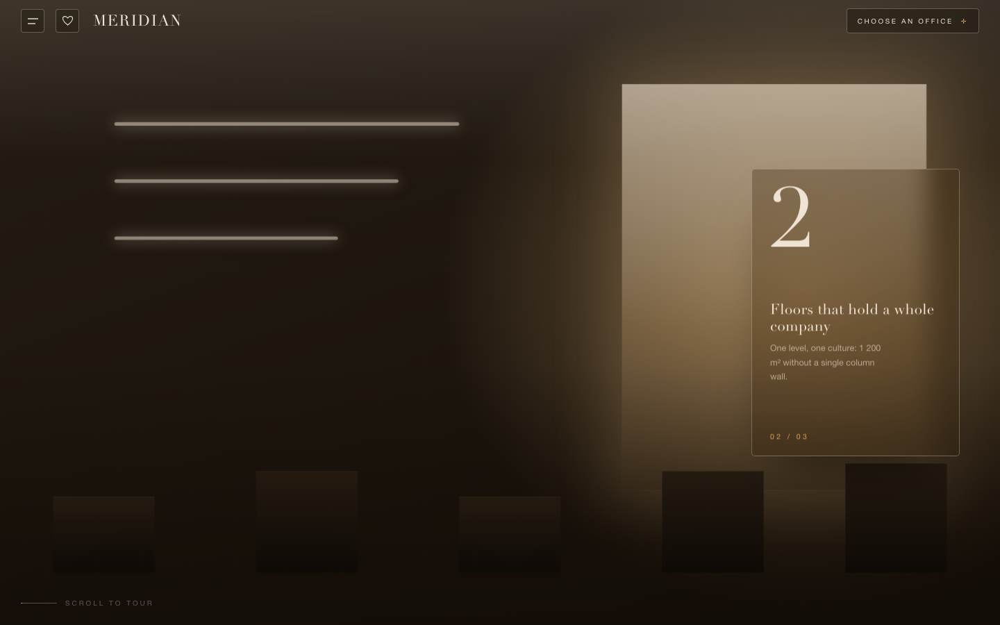
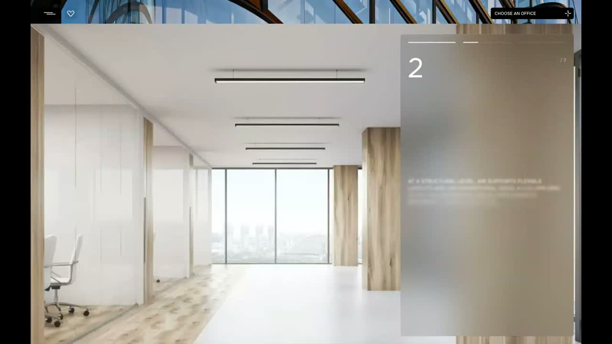

Batch-4 ↔ live AIR — хорео-звірка (наше зліва = CD RAW, ЖИВЕ справа = reference-frames)
Транзиш-логіка звірена ЧИСЛАМИ (гейти нижче). Тут — ОКО на композицію/темп проти живих кадрів. Це НЕ формальний video-parity (наш фасад інший бренд); фінальний вердикт — Єгор.
01 · FLOOR-SELECT (DUNE) ↔ live b8-select
Hover вежі: плити + закріплена картка
наше DUNE: T2 hover, картка «14 · 3 UNITS OPEN»live: hover-стан (плити+картка)
✅ Композиція 1-в-1: 3 вежі (мала-велика-мала), лейбли T1/T2/T3 над ними, SELECT FLOOR ліворуч, чіп праворуч, картка з боку вежі. Гейти: anchor fixed Δ0px, dead-inert, sweep=1 hot, 0-CLS, 0 err.
02 · PLAN-POPOVER (ATELIER) ↔ live b9-plan
Сеттл: план в'їжджає повернутим (-28°) → рівний
наше ATELIER: мід-сеттл (rotate-tilt)live: план прибув повернутим/тьмяним
Попавер юніта з міні-планом + драбинка
наше: Unit 702 попавер + міні-план + драбинка 2-18live: план 2_18, попавер, драбинка «2..18»
✅ Сеттл transform-only (гейт), попавер з РЕАЛЬНИМ міні-планом, драбинка+свап-під-вуаллю, 1 pinned max, 0 err. Механіка = закон.
⚠️ Дрібниця: swap-під-вуаллю фіксує swap коли вуаль ~93% (ще дотікає 220ms) — візуально ок, але не «під 100%». Косметика: подовжити вуаль-hold на +60ms при полірі.
03 · PUSH-CAROUSEL (MERIDIAN) ↔ live b13-carousel
Slide 1 held + панель «1»
наше: s1 фасад + панель «1»live: слайд 1, панель «1»
🔴 MID-PUSH 1→2 — тут проблема
наше: панель «1» і «2» НАКЛАДАЮТЬСЯ = каша текстуlive: акуратний крос-свап, текст не налазить
✅ ВИПРАВЛЕНО (С33-5): overlap-каша прибрана — свап тепер ЧИСТИЙ HANDOFF (стара caption повністю гасне на першій половині push-вікна, нова заходить на другій; панель-бокс не рухається). Детектор колізій: було 1/21 кадр з обома @0.17 → тепер 0/21 в ОБОХ push-вікнах. Пер-варіант гейти 12/12 (holds цілі, панель Δ0px, 0 err). Скріншот mid-push: панель порожня в момент кросу — тексти не налазять. Фікс у всіх 3 (спільний JS) + перезалито в CD-проєкт.
Slide 2 held + панель «2»


наше: s2 інтер'єр + панель «2» (чисто на holdʼі)live: слайд 2, панель «2»
✅ На HOLD-ах — чисто (гейт: h1/h2/h3 по одному caption, панель-бокс Δ0px, push монотонний, телепорт детермінований). Проблема ЛИШЕ в overlap-вікні свапу.